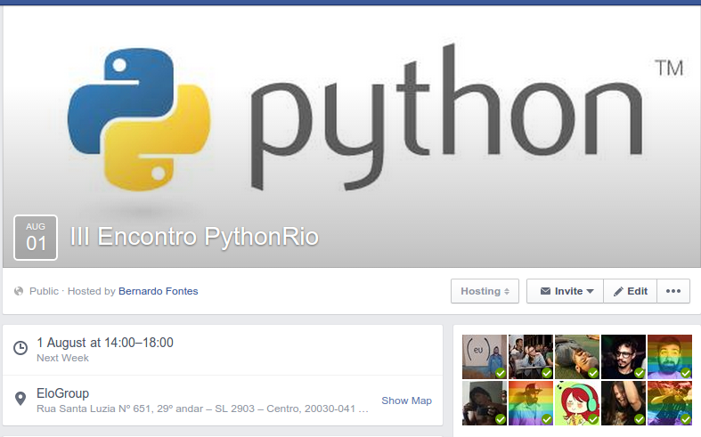

Ciclo de Palestras
Resolvendo Todos Seus Problemas com Python
Bernardo Fontes
Rio de Janeiro/RJ
22 de Julho de 2015
## O que é Python?
- ### Linguagem de programção de uso geral
- ### Mais de 25 anos
- ### Criada por Guido Van Rossum
- ### Software Livre
- ### Sintaxe invejada por muitos
- ### Alta produtividade (DRY)
## Características da Linguagem
- ### É interpretada
- ### Dinamicamente tipada
- ### Fortemente tipada
- ### Multiplataforma
- ### Blocos por Identação
## Características da Linguagem
- ### Multiparadigma
- ### Procedural
- ### Orientação a Objetos
- ### Funcional
## Script Hello World
```python
print "hello world!"
```
### Executar:
```bash
$ python hello_world.py
```
## Hello World em Go
```go
package main
import "fmt"
func main() {
fmt.Println("hello world")
}
```
### Executar:
```bash
$ go run hello_world.go
```
## Python procedural (sem chaves, colchetes, #wtfs)
```python
if nome_para_imprimir == 'meio':
print 'Botelho'
elif nome_para_imprimir == 'inico':
print 'Bernardo'
elif nome_para_imprimir == 'fim':
print 'Fontes'
```
## Python procedural (iterações)
```python
>>> nomes = ['Bernardo', 'Ana', 'Ronaldo']
>>> for nome in nomes:
... print nome
...
Bernardo
Ana
Ronaldo
>>> while nomes:
... print nomes.pop()
...
Ronaldo
Ana
Bernardo
```
## Python procedural (pertencimento)
```python
>>> nomes = ['Bernardo', 'Ana', 'Ronaldo']
>>> print 'Bernardo' in nomes
True
>>> nome = 'Bernardo Botelho Fontes'
>>> print 'Bernardo' in nome
True
```
## Batteries Included
### Tipos básicos poderosos
### Standard Library Gigantesca
## Tipos Básicos
```python
>>> inteiro = 43
>>> ponto_flutuante = 31.9
>>> complexo = 1.5 + 9j
>>> print complexo
(1.5+9j)
>>> strings = 'palestra bacana'
>>> tuplas = (26, 'Bernardo', complexo)
>>> listas = [1, 'cavalo', tuplas]
>>> dicionarios = {'nome': 'Bernardo', 'linguagem': 'Python'}
```
## Quero lidar com arquivos CSV
```python
>>> import csv
>>> with open('eggs.csv', 'rb') as csvfile:
... spamreader = csv.reader(csvfile, delimiter=';')
... for row in spamreader:
... print ', '.join(row)
Spam, Spam, Spam, Spam, Spam, Baked Beans
Spam, Lovely Spam, Wonderful Spam
```
## Quero lidar com APIs web
```python
>>> import urllib2
>>> f = urllib2.urlopen('http://www.python.org/')
>>> print f.read()
```
## Quero lidar com o Sistema Operacional
```python
import sys, os
if sys.platform.startswith('freebsd'):
# FreeBSD-specific code here...
elif sys.platform.startswith('linux'):
# Linux-specific code here...
#########
>>> statinfo = os.stat('somefile.txt')
>>> statinfo
(33188, 422511, 769, 1, 1032, 100, 926, 1105022698,1105022732, 1105022732)
>>> statinfo.st_size
926
```
## Quero lidar com Expressões Regulares
```python
>>> import re
>>> m = re.search('\d+', 'bernardo3123xasd')
>>> m.group(0)
'3123'
```
## Quero lidar com arquivos JSON
```python
>>> import json
>>> dados = {'nome': 'Bernardo', 'idade': 26, 'preguica': None}
>>> print json.dumps(dados)
{"idade": 26, "preguica": null, "nome": "Bernardo"}
```
Quero voar
 ## Orientação à Objetos
- ### Tem classes
- ### Tem objetos
- ### Tem métodos estáticos
- ### Tem métodos de classes
- ### Tem herança (simples e múltipla)
- ### Tem polimorfismo
- ### Tem encapsulamento
## Um inteiro é um objeto
```python
In [1]: a = 4
In [2]: a.__sub__(3)
Out[2]: 1
In [3]: print dir(a)
['__abs__', '__add__', '__and__', '__class__', '__cmp__', '__coerce__', '__delattr__', '__div__', '__divmod__', '__doc__', '__float__', '__floordiv__', '__format__', '__getattribute__', '__getnewargs__', '__hash__', '__hex__', '__index__', '__init__', '__int__', '__invert__', '__long__', '__lshift__', '__mod__', '__mul__', '__neg__', '__new__', '__nonzero__', '__oct__', '__or__', '__pos__', '__pow__', '__radd__', '__rand__', '__rdiv__', '__rdivmod__', '__reduce__', '__reduce_ex__', '__repr__', '__rfloordiv__', '__rlshift__', '__rmod__', '__rmul__', '__ror__', '__rpow__', '__rrshift__', '__rshift__', '__rsub__', '__rtruediv__', '__rxor__', '__setattr__', '__sizeof__', '__str__', '__sub__', '__subclasshook__', '__truediv__', '__trunc__', '__xor__', 'bit_length', 'conjugate', 'denominator', 'imag', 'numerator', 'real']
In [4]: a.__class__
Out[4]: int
```
## Orientação à Objetos
- ### Tem classes
- ### Tem objetos
- ### Tem métodos estáticos
- ### Tem métodos de classes
- ### Tem herança (simples e múltipla)
- ### Tem polimorfismo
- ### Tem encapsulamento
## Um inteiro é um objeto
```python
In [1]: a = 4
In [2]: a.__sub__(3)
Out[2]: 1
In [3]: print dir(a)
['__abs__', '__add__', '__and__', '__class__', '__cmp__', '__coerce__', '__delattr__', '__div__', '__divmod__', '__doc__', '__float__', '__floordiv__', '__format__', '__getattribute__', '__getnewargs__', '__hash__', '__hex__', '__index__', '__init__', '__int__', '__invert__', '__long__', '__lshift__', '__mod__', '__mul__', '__neg__', '__new__', '__nonzero__', '__oct__', '__or__', '__pos__', '__pow__', '__radd__', '__rand__', '__rdiv__', '__rdivmod__', '__reduce__', '__reduce_ex__', '__repr__', '__rfloordiv__', '__rlshift__', '__rmod__', '__rmul__', '__ror__', '__rpow__', '__rrshift__', '__rshift__', '__rsub__', '__rtruediv__', '__rxor__', '__setattr__', '__sizeof__', '__str__', '__sub__', '__subclasshook__', '__truediv__', '__trunc__', '__xor__', 'bit_length', 'conjugate', 'denominator', 'imag', 'numerator', 'real']
In [4]: a.__class__
Out[4]: int
```
Curso Objetos Pythônicos
 ## Python funcional
```python
>>> dobro = lambda x: x * 2
>>> dobro(4)
8
>>> range(5)
[0, 1, 2, 3, 4]
>>> map(dobro, range(5))
[0, 2, 4, 6, 8]
```
## The Zen of Python
```python
>>> import this
The Zen of Python, by Tim Peters
Beautiful is better than ugly.
Explicit is better than implicit.
Simple is better than complex.
Complex is better than complicated.
Flat is better than nested.
Sparse is better than dense.
Readability counts.
Special cases aren't special enough to break the rules.
Although practicality beats purity.
Errors should never pass silently.
Unless explicitly silenced.
In the face of ambiguity, refuse the temptation to guess.
There should be one-- and preferably only one --obvious way to do it.
Although that way may not be obvious at first unless you're Dutch.
Now is better than never.
Although never is often better than *right* now.
If the implementation is hard to explain, it's a bad idea.
If the implementation is easy to explain, it may be a good idea.
Namespaces are one honking great idea -- let's do more of those!
```
## Como resolver meus problemas com Python?
## Web
- ### Django
- ### Flask
- ### Tornado
## Desktop
- ### PyGTK
- ### PyQt
## Integração com Java
- ### Jython
## Integração com .NET
- ### IronPython
## Python funcional
```python
>>> dobro = lambda x: x * 2
>>> dobro(4)
8
>>> range(5)
[0, 1, 2, 3, 4]
>>> map(dobro, range(5))
[0, 2, 4, 6, 8]
```
## The Zen of Python
```python
>>> import this
The Zen of Python, by Tim Peters
Beautiful is better than ugly.
Explicit is better than implicit.
Simple is better than complex.
Complex is better than complicated.
Flat is better than nested.
Sparse is better than dense.
Readability counts.
Special cases aren't special enough to break the rules.
Although practicality beats purity.
Errors should never pass silently.
Unless explicitly silenced.
In the face of ambiguity, refuse the temptation to guess.
There should be one-- and preferably only one --obvious way to do it.
Although that way may not be obvious at first unless you're Dutch.
Now is better than never.
Although never is often better than *right* now.
If the implementation is hard to explain, it's a bad idea.
If the implementation is easy to explain, it may be a good idea.
Namespaces are one honking great idea -- let's do more of those!
```
## Como resolver meus problemas com Python?
## Web
- ### Django
- ### Flask
- ### Tornado
## Desktop
- ### PyGTK
- ### PyQt
## Integração com Java
- ### Jython
## Integração com .NET
- ### IronPython
PyPI - Python Package Index
#### $ sudo apt-get install python-pip
#### $ pip install django
## Qual a melhor feature do Python?
- ### As **pessoas**
## Diversos encontros e comunidades espalhadas por **todo o mundo**
III Encontro PythOnRio

11ª PythonBrasil